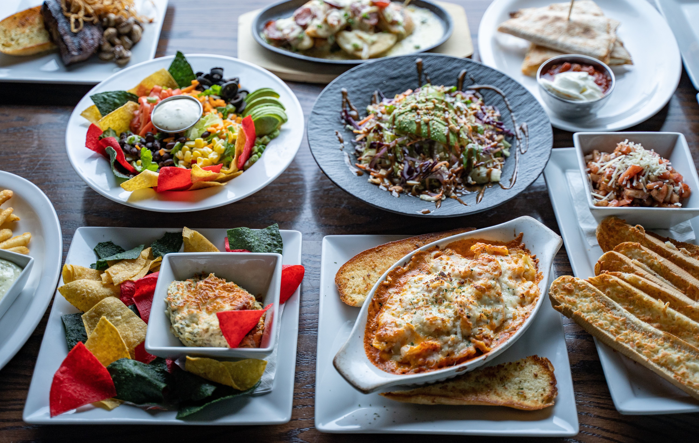

Fresh Meals Made for Your Schedule

Busy days should not mean having to depend on fast food. My Private Chef prepares fresh breakfast, lunch and dinner meals that can be ordered in advance and delivered to your home, workplace, school or university.
Whether you need tomorrow's lunch or want to plan your meals for an entire month, My Private Chef makes meal planning simple and convenient.
View Our Meals Plan Your MealsHow It Works
1. Choose Your Meals
Select from our available breakfast, lunch, dinner or special-occasion meal options.
2. Select Your Dates
Choose the date or dates on which you would like to receive your meals.
3. Choose Your Delivery Details
Provide your delivery location and select an available delivery time.
4. Order in Advance
Place your order at least one day before your selected delivery date.
5. Receive Your Meal
Your meal is freshly prepared and delivered to your selected location.
Our Services
Everyday Meals
Choose freshly prepared breakfast, lunch and dinner options for your everyday needs.
Monthly Meal Planning
Plan several days or an entire month of meals in advance.
Scheduled Delivery
Choose suitable delivery dates and available delivery times.
Special-Occasion Meals
Order prepared meals for holidays, family gatherings and other special occasions.
Frequently Asked Questions
When should I order?
At least one day before delivery. An enquiry does not confirm an order.
Can I plan a month of meals?
Yes. Choose monthly planning on the enquiry page and describe your dates and meals.
Can I mention allergies?
Include dietary requirements in your enquiry. Suitability must be confirmed before ordering.